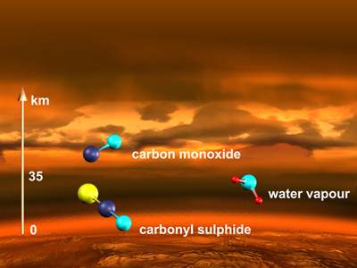
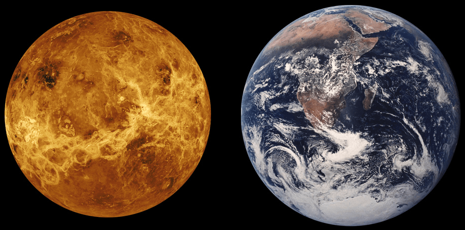
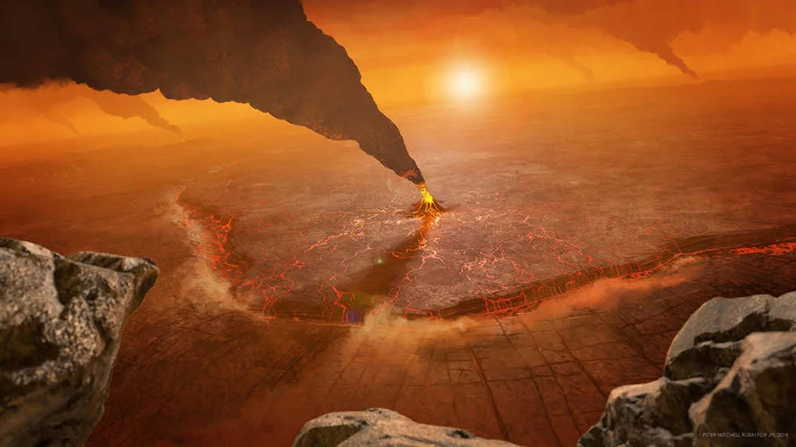

Spacecraft to Explore Venus:
There have been 46 Venus missions.
Venera 7 (1970) was the first lander.
The U.S. landed the Day Probe (1978), and Vega 2 (1985) was the most recent.

| Surface Temperature: Averages ~464°C (hottest planet in the solar system). |
length of year : A day on Venus (~243 Earth days vs. ~225 Earth days). |
Size and Mass: Diameter (~12,104 km), slightly smaller than Earth. |
Venus is the second planet from the Sun.
Venus's atmosphere contains thick clouds of sulfuric acid.
Venus rotates in a retrograde direction, meaning it rotates opposite to its orbit around the Sun.
No, Venus does not have plate tectonics, but its surface shows signs of volcanic activity and crustal deformation.
is inhospitable to life due to its extreme temperatures, high pressure, and toxic atmosphere.
Venus is one of only two planets in our solar system that doesn't have a moon.
| Atmosphere: Composed mostly of carbon dioxide, with clouds of sulfuric acid. |
 |
| Toxic Twin : Venus is often called "Earth’s twin" because they’re similar in size and structure, but Venus has extreme surface heat and a dense, toxic atmosphere. If the Sun were as tall as a typical front door, Earth and Venus would each be about the size of a nickel. |
 |
| Diverse Terrain: Venus has a solid surface covered in dome-like volcanoes, rifts, and mountains, with expansive volcanic plains and vast, ridged plateaus. |
 |
Spacecraft to Explore Venus:There have been 46 Venus missions. |
|